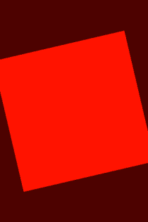

This example application demonstrates how to use OpenGL ES 1.1 to control a device's graphics hardware.

This example is included in the MoSync SDK installation in the /examples folder. For information on importing the examples into your workspace, see Importing the Examples.
When this application is started you will see a red rotating square.
The code of the project is collected in one single file. It shows how to use the GLMoblet in order to create an OpenGL ES 1.1 based application. It has a set of helper functions for setting up the initial state: gluPerspective, initGL, and setViewport.
The init function first calls setViewport to setup the projection matrix. Next it calls initGL to setup the OpenGL context state.
The draw function first clear the screen to a dark red color and continues by setting up the modelview matrix, by calling the OpenGL functions for manipulating the matrix. Next it sets the color for the square and send the pointer to the structure describing the vertices of the square. Next it fills the structure with the vertex coordinates and draws the primitive as a triangle strip.
The only button that the program responds to is the back key. If it is pressed the application exits.